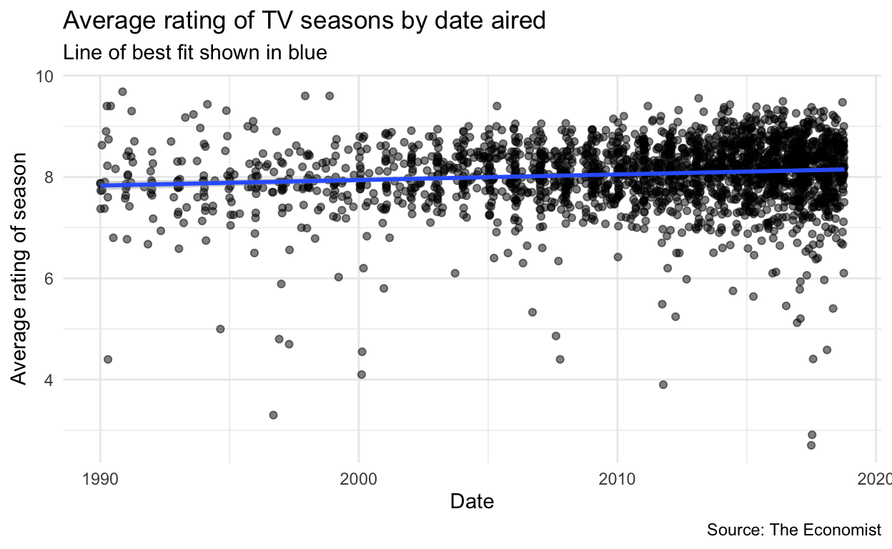
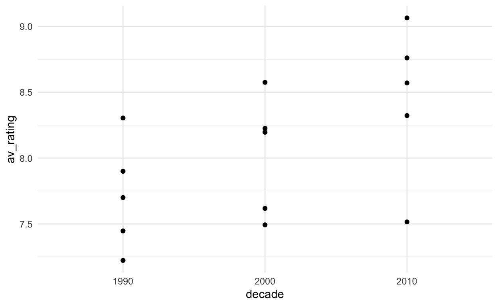
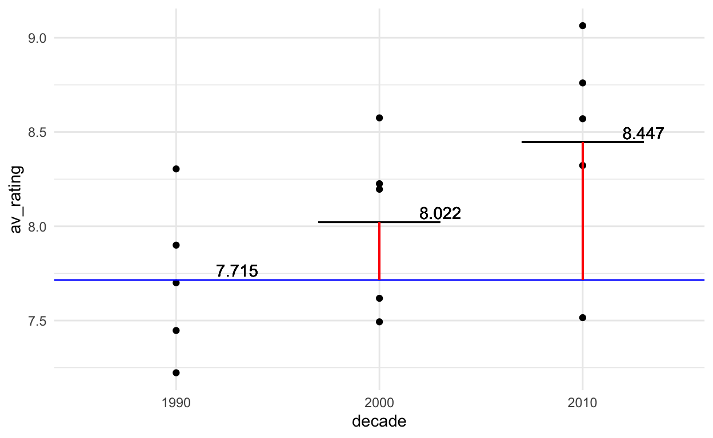

Instructions
This is a revision task based on the Week 1 Team Up! activity. There are no bonus points for completing the task asynchronously, but I hope it might be a useful revision tool for you.
There are hints for some questions. In these cases the final hint is complete correct code.
You can clear your answers and start again with the ‘Start Over’ button at the bottom of the menu. (I doubt this is well optimised for mobile, so if you can’t see it, use a larger screen.)
Question 1 to 6 refer to the TV show data discussed in the next tab. Question 7, 8 and 9 are self-contained.
The data
Golden age of TV?
Let’s look at some data from a 2018 article in the Economist.

# Libraries
library(tidyverse)
library(modelr)
library(lubridate) # to make it easy to work with dates
url <- "https://raw.githubusercontent.com/TheEconomist/graphic-detail-data/master/data/2018-11-24_tv-ratings/IMDb_Economist_tv_ratings.csv"
tv_data <- read_csv(url)head(tv_data, n = 10)glimpse(tv_data)## Rows: 2,266
## Columns: 7
## $ titleId <chr> "tt2879552", "tt3148266", "tt3148266", "tt3148266", "tt3…
## $ seasonNumber <dbl> 1, 1, 2, 3, 4, 1, 2, 1, 2, 3, 4, 5, 6, 7, 8, 1, 1, 1, 1,…
## $ title <chr> "11.22.63", "12 Monkeys", "12 Monkeys", "12 Monkeys", "1…
## $ date <date> 2016-03-10, 2015-02-27, 2016-05-30, 2017-05-19, 2018-06…
## $ av_rating <dbl> 8.4890, 8.3407, 8.8196, 9.0369, 9.1363, 8.4370, 7.5089, …
## $ share <dbl> 0.51, 0.46, 0.25, 0.19, 0.38, 2.38, 2.19, 6.67, 7.13, 5.…
## $ genres <chr> "Drama,Mystery,Sci-Fi", "Adventure,Drama,Mystery", "Adve…Each row (i.e., observation) is a season of TV show.
Suppose we are interested in investigating the association between when an season was released (decade, the decade that the TV show was released, or date, the actual date) and av_rating (average rating per season).
Question 1
Assumptions
Carefully consider the head and glimpse of the data provided in the data section and the plot below.

Suppose you wish to use fit a model to predict average season rating (av_rating) from date alone. Using just the information you have so far, which ONE of the following comments is most appropriate?
A. Linear regression seems appropriate.
B. Linear regression does not seem appropriate due to the independence assumption being violated.
C. Linear regression does not seem appropriate due to the equality of variance assumption being violated.
D. Linear regression does not seem appropriate due to the linearity assumption being violated.
Note: In the following questions we will assume we can proceed with linear regression. This may or may not be correct. I.e. it is not a hint to the answer to this question.
Question 2
t-test
Suppose you talk to a TV critic and they suggest that in industry there is a common belief that the average ‘average’ rating for TV shows in the 2010s was 8.1. (Note the careful language, we are working with data aggregated at the season level.)
Restrict the data to just the seasons from 2010. (If you don’t know how to do this, there is a hint). Run a one sample t-test to test the claim from the TV critic.
# You can get just the 2010 data with this code
just2010 <- filter(tv_data_edit, decade == "2010")# What is your null hypothesis here? Rember that you use mu = hypothesised value (insert valeu) to represent your hypothesised valuejust2010 <- filter(tv_data_edit, decade == "2010")
t.test(tv_data_edit$av_rating, mu = 8.1)Which of the following is the best conclusion based on the result of your t-test?
A. We have no evidence against the claim that the average, average rating is 8.1.
B. We have some evidence against the claim that that the average, average rating is 8.1.
C. We have very strong evidence against the claim that the average, average rating is 8.1.
D. The t.test functions produces an error due to a violation of Normality assumption.
Question 3
Toy data
Let’s take a moment to do something very simple. I have pulled five observations from each decade to plot.

How do we make sense of this with linear regression?
Let’s start by fitting a line to each group separately. (Aside: if you interpreted each of these as a one sample t-test, you’d be testing $H_0:
sep_mod <- c(
lm(av_rating~1, filter(simple, decade == 1990))$coef,
lm(av_rating~1, filter(simple, decade == 2000))$coef,
lm(av_rating~1, filter(simple, decade == 2010))$coef
)
names(sep_mod) <- c("xbar1990", "xbar2000", "xbar2010")
sep_mod## xbar1990 xbar2000 xbar2010
## 7.71498 8.02172 8.44652Hopefully you agree that the intercept of each of these ‘intercept only’ models are the means of each group.

Now suppose I claim that we can describe all 15 points with this equation:
\[y_i = d_{1}\bar{x}_{1990} + d_{2}\bar{x}_{2000} + d_{3}\bar{x}_{2010} + \epsilon_i\]
Where \(\epsilon_i \sim \text{N}(0, \sigma)\).
Which ONE of the following would have to be true for this to be true?
A. \(d_1\) would be a column of FIFTEEN 1s and then \(d_2\) and \(d_3\) would be columns of 0s and 1s, and take the value 1 when the observation is from 2000 and 2010 respectively.
B. There are infinite possible combinations of three \(d\) vectors for which this would be true, so as long as it is any one of those, this will be true.
C. Each \(d\) would have to be a vector of FIVE 0s and 1s, and take the value 1 when the observation is the decade indicated by the \(\mu_{year}\) it is multiplied by.
D. Each \(d\) would have to be a vector of FIFTEEN 0s and 1s, and take the value 1 when the observation is that decade.
Question 4
Equations
Which ONE of these equations is equivalent to \(y_i = d_{1}\bar{x}_{1990} +d_{2}\bar{x}_{2000} + d_{3}\bar{x}_{2010} +\epsilon_i\)?
A. \(y_i = \bar{x}_{1990} + d_{2}(\bar{x}_{2000}-\bar{x}_{1990}) + d_{3}(\ \bar{x}_{2010}-\bar{x}_{1990}) +\epsilon_i\)
B. \(y_i = \bar{x}_{1990} + d_{2}(\bar{x}_{2000}-\bar{x}_{1990}-\bar{x}_{2010}) + d_{3}(\bar{x}_{2010}-\bar{x}_{1990}-\bar{x}_{2000})+\epsilon_i\)
C. \(y_i = (\bar{x}_{1990} +\bar{x}_{2000} + \bar{x}_{2010})*(-d_{1} - d_{2} - d_{3})\)
D. \(y_i =d_{1}(\bar{x}_{1990}- \bar{x}_{2010}) + d_{2}( \bar{x}_{2000}- \bar{x}_{1990}) + d_{3}( \bar{x}_{2010}- \bar{x}_{1990}) +\epsilon_i\)
You may (or may not) find this visualization helpful to your thinking.

Question 5
ANOVA assumption rule of thumb
Note: there are specific tests for equality of variances, but for the purposes of this course we will just consider a rule of thumb from Dean and Voss (Design and Analysis of Experiments, 1999, page 112): if the ratio of the largest within-in group variance estimate to the smallest within-group variance estimate does not exceed 3, \(s^2_{max}/s^2_{min}<3\) , the assumption is probably satisfied.
The below code produces a summary of the tv_data_edit tibble. You can ignore the ‘.groups = “keep”’ part. Even if you are unfamiliar with the over syntax, you should be able to figure out what a, b, c, d and e are from your previous knowledge of R.
tv_data_edit %>%
group_by(decade) %>%
summarise(a = mean(av_rating), b = var(av_rating), c = sd(av_rating), d = var(av_rating)^2, e = max(av_rating), .groups = "keep")# You can use this area as a calculator if you wishWhich of the following is true based on this table?
A. The equality of variances assumption appears to be satisfied, therefore ANOVA is definitely appropriate.
B. The equality of variances assumption appears to be satisfied, but we can’t proceed with ANOVA without checking the other assumptions.
C. The equality of variances assumption appears to be seriously violated, therefore ANOVA is not appropriate.
D. Not enough information to make a claim about the equality of variances assumption.
Question 6
One-way ANOVA as regression
summary(lm(av_rating ~ decade, data = tv_data_edit))##
## Call:
## lm(formula = av_rating ~ decade, data = tv_data_edit)
##
## Residuals:
## Min 1Q Median 3Q Max
## -5.4043 -0.3159 0.0541 0.4194 1.8491
##
## Coefficients:
## Estimate Std. Error t value Pr(>|t|)
## (Intercept) 7.83327 0.04634 169.055 < 2e-16 ***
## decade2000 0.18845 0.05384 3.500 0.000474 ***
## decade2010 0.27497 0.04949 5.555 3.09e-08 ***
## ---
## Signif. codes: 0 '***' 0.001 '**' 0.01 '*' 0.05 '.' 0.1 ' ' 1
##
## Residual standard error: 0.6667 on 2263 degrees of freedom
## Multiple R-squared: 0.01462, Adjusted R-squared: 0.01375
## F-statistic: 16.79 on 2 and 2263 DF, p-value: 5.788e-08summary(aov(av_rating ~ decade, data = tv_data_edit))## Df Sum Sq Mean Sq F value Pr(>F)
## decade 2 14.9 7.461 16.79 5.79e-08 ***
## Residuals 2263 1005.7 0.444
## ---
## Signif. codes: 0 '***' 0.001 '**' 0.01 '*' 0.05 '.' 0.1 ' ' 1Assume the assumptions for ANOVA are valid (this may not be true). Which ONE of the following is the best conclusion?
A. We have very strong evidence (p-value < 2e-16) against the hypothesis that the mean season average ratings are the same in each decade.
B. We have very strong evidence (p-value = 5.788e-08) against the hypothesis that the mean season average ratings are the same in each decade.
C. We have very very strong evidence (p-value = 5.788e-08) that at least one of the mean season average ratings is different from the others.
D. We have very strong evidence (p-value < 2e-16) that at least one of the mean season average ratings is different from the others.
Question 7
Linearity
Which ONE of these models is NOT linear?
A. \(Y = \beta_0 + \beta_1X_1 + \beta_2X_3^2\)
B. \(Y = \beta_0 + \beta_1X_1 + \beta_2X_2X_3\)
C. \(Y = \beta_0 + \beta_1X_1 + X_3^{\beta_2}\)
D. \(Y = \beta_0 + \beta_1X_1 + \beta_2X_2 + \beta_3cos(X_3)\)
Question 8
LaTeX
LaTeX is a document preparation system that allows us to type set mathematical symbols well. In R Markdown, which we will use for assessments in this course (more on that next week for those who are unfamiliar), we can use LaTeX syntax to write equations and mathematical symbols. Single dollar sign pairs $ create inline expressions and double dollar sign pairs ($$) will show the express in display mode.
Inline: \(\pi^2\)
Display: \[\pi^2\]
- Greek letters can be displayed with a back slash before their name, e.g.,
$\eta$-> \(\eta\). - Superscripts:
$a^b$-> \(a^b\), or$a^{2b}$-> \(a^{2b}\). - Subscripts:
$a_b$-> \(a_b\), or$a_{2b}$-> \(a_{2b}\).
Note: $a_bi$ -> \(a_bi\)
Which of the following lines of LaTeX would create the equation below (if correctly put in dollar signs $)?
\[y_i = \beta_0 + \beta_1x_{1i} + \epsilon_i\]
A. yi = \beta0 + \beta1x{1i} + \epsilon i
B. y_i = \beta_0 + \beta_1x_1i + \epsilon_i
C. y_i = \b_0 + \b_0\ex_1i + \error_i
D. y_i = \beta_0 + \beta_1x_{1i} + \epsilon_i
Question 9
Course logistics
One of the important administrative Forms for this course has an emoji hiding in it. Check each of the forms and select which ONE of the following emoji it is.
A. 🚯
B. 🔤
C. 🚝
D. 🕧
Note: These are all examples of unpopular (i.e. not commonly used) emoji based on http://emojitracker.com/. Photosensitivity warning for flashing as the site updates real-time.